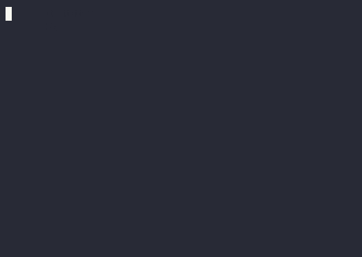
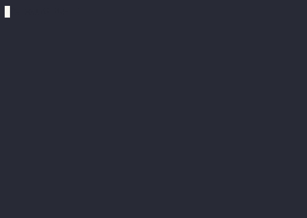
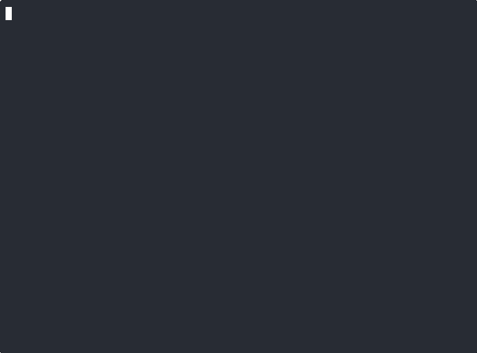

Mosaic
An experimental tool for building console UI in Kotlin using the Jetpack Compose compiler/runtime. Inspired by Ink.

Jump to: #Introduction | #Usage | #Samples | #FAQ | #License
Introduction
The entrypoint to Mosaic is the runMosaicMain function. The lambda passed to this function is responsible for both output and performing work.
fun main() = runMosaicMain {
Text("The count is: 0")
}To change the output dynamically we can use local properties to hold state. Let's update our counter to actually count to 20.
fun main() = runMosaicMain {
var count by remember { mutableIntStateOf(0) }
Text("The count is: $count")
LaunchedEffect(Unit) {
for (i in 1..20) {
delay(250.milliseconds)
count = i
}
}
}(Note: You may need to add imports for androidx.compose.runtime.getValue and androidx.compose.runtime.setValue manually.)

That is the most basic sample of Mosaic. From there, the limit is only your imagination.

(Note: graphs in the above have rendering problems due to asciinema/agg which do not appear in the real output)
Usage
Mosaic is a library for Compose, and it relies on JetBrains' Kotlin Compose plugin to be present for use. Any module which wants to call runMosaic or define @Composable functions for use with Mosaic must have this plugin applied. For more information, see the JetBrains Compose compiler documentation.
Mosaic itself can then be added like any other dependency:
dependencies {
implementation("com.jakewharton.mosaic:mosaic-runtime:0.18.0")
}Documentation is available at jakewharton.github.io/mosaic/docs/0.x/.
Snapshots of the development version are available in the Central Portal Snapshots repository.
repositories {
mavenCentral()
maven {
url 'https://central.sonatype.com/repository/maven-snapshots/'
}
}
dependencies {
implementation("com.jakewharton.mosaic:mosaic-runtime:0.19.0-SNAPSHOT")
}Snapshot documentation is available at jakewharton.github.io/mosaic/docs/latest/.
Samples
Run ./gradlew installJvmDist to build the sample binaries.
-
Counter: A simple increasing number from 0 until 20.
./samples/counter/build/install/counter-jvm/bin/counter -
Demo: A playground for demonstrating many features of Mosaic.
./samples/demo/build/install/demo-jvm/bin/demo -
Jest: Example output of a test framework (such as JS's 'Jest').
./samples/jest/build/install/jest-jvm/bin/jest -
Robot: An interactive, game-like program with keyboard control.
./samples/robot/build/install/robot-jvm/bin/robot -
rrtop: An example inspired by rrtop.
./samples/rrtop/build/install/rrtop-jvm/bin/rrtop -
snake: Snake game.
./samples/snake/build/install/snake-jvm/bin/snake
FAQ
I thought Compose was a UI toolkit for Android?
Compose is, at its core, a general-purpose compiler and runtime to do state tracking and tree node and property manipulation. This can be used on any platform supported by Kotlin for any kind of state or with any tree. It's an amazing piece of technology.
Compose UI is the modern UI toolkit for Android which also runs on the desktop, iOS, and the web. The lack of differentiation between these two technologies has unfortunately caused Compose UI to overshadow the core under the single "Compose" moniker in an unforced marketing error.
Other examples of non-Compose UI-based Compose projects are Cash App's Redwood, JetBrains' Compose HTML, or Google's Jetpack Glance.
Broken output with ./gradlew run and/or inside IntelliJ IDEA
Running within Gradle or IntelliJ IDEA will not work. These tools do not provide access to the TTY in order to be interactive. And for non-interactive programs, both will strip ANSI control characters which prevent Mosaic from redrawing over a previous frame. The output will likely just render in successive lines instead.
Run your programs directly in a terminal emulator–no IDE and no Gradle.
License
Copyright 2020 Jake Wharton
Licensed under the Apache License, Version 2.0 (the "License");
you may not use this file except in compliance with the License.
You may obtain a copy of the License at
http://www.apache.org/licenses/LICENSE-2.0
Unless required by applicable law or agreed to in writing, software
distributed under the License is distributed on an "AS IS" BASIS,
WITHOUT WARRANTIES OR CONDITIONS OF ANY KIND, either express or implied.
See the License for the specific language governing permissions and
limitations under the License.All modules:
This is a Mosaic-adapted copy of the androidx.compose.animation-core library source code.
Core runtime and UI components.
High-level terminal interface.
Utilities for testing Mosaic composables.
Low-level TTY manipulation library.
High-level terminal manipulation and parsing library.